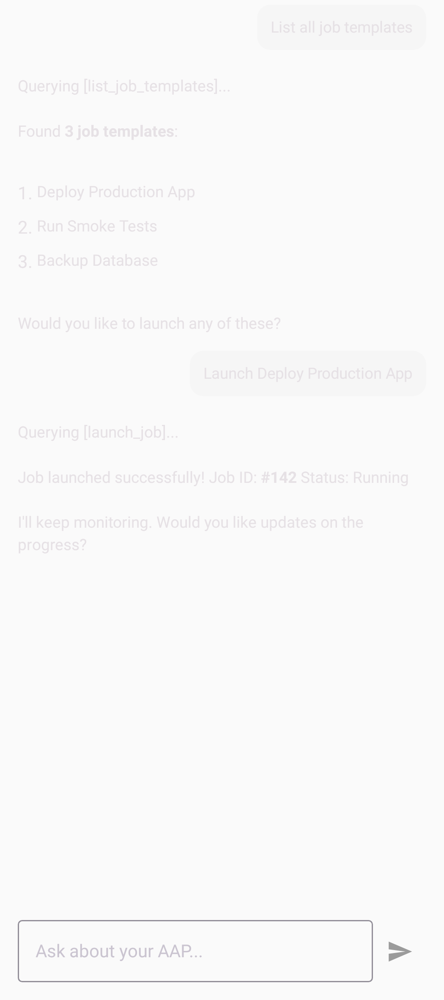
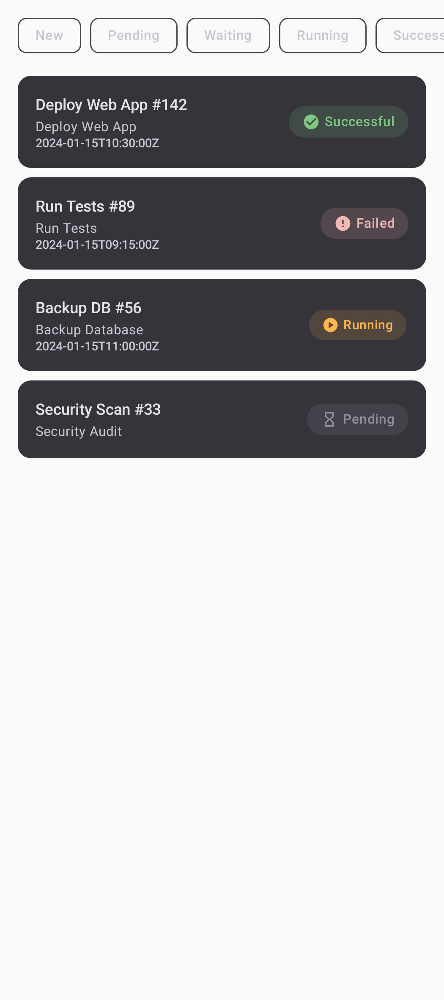
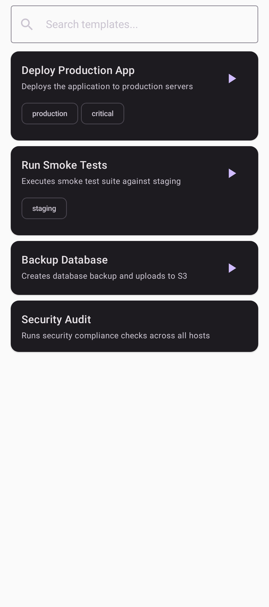
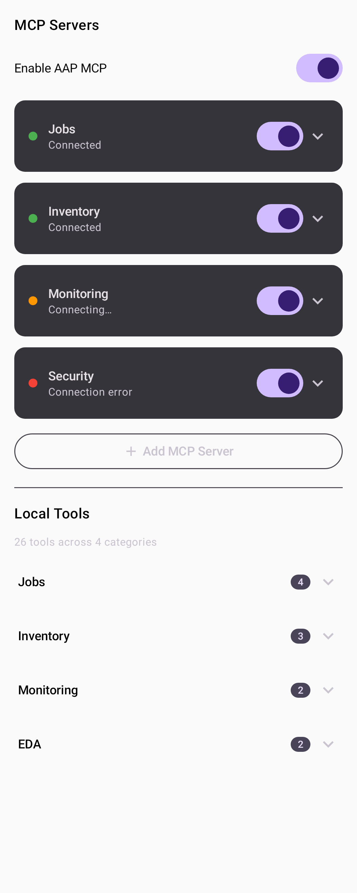

Ansible Jane
Your Ansible, Across Any Distance
A lightweight Android app for Ansible Automation Platform. Launch jobs, monitor workflows, manage inventories, and talk to Jane — an AI assistant that understands your infrastructure. No ansible required on your phone. Just the connection.


What Jane Can Do
She lives in the network between you and your automation platform. Everything you need, nothing you don't.
Launch & Monitor Jobs
Browse job templates, launch playbooks with parameters, and watch them run in real time. Approve or deny workflow steps from your pocket.
Talk to Jane
An AI assistant that speaks Ansible. Ask her to list failing jobs, check host facts, or launch a template — she calls the right API and reports back.
MCP Tool Integration
Connect Jane to MCP servers for extended capabilities. Auto-discovers AAP's MCP endpoints. Add custom servers for your own tooling.
Inventory & Hosts
Browse inventories, inspect hosts and their facts, check groups. Everything from your AAP instance, organized and searchable.
Event-Driven Ansible
Monitor EDA activations and rulebooks. See what's triggering your event-driven automation without opening a laptop.
Secure by Default
Tokens encrypted with Android Keystore + Tink. HTTPS-only. No data stored on third-party servers. Your credentials never leave your device.
See It In Action
Built with Material You. Adapts to your device theme.



Get Ansible Jane
Free, open source, no accounts. Install and connect to your AAP instance.
GitHub Releases
Download the latest APK directly. Signed release builds for every version.
Download APK